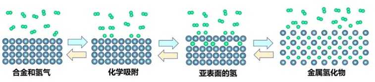
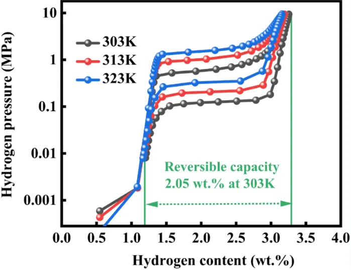

Patents
Additive manufacturing equipment, hydrogen storage and thermal management.
Hydrogen generation and power system based on low-temperature safe solid hydrogen-storage material
CN119864458A · CN202510055063.5
Shaoquan Wang · First inventor
Solid hydrogen storage thermal-management system and method
CN119492003A · CN202510054968.0
Shaoquan Wang · First inventor
Novel solid hydrogen storage thermal-management system and method
CN119508723A · CN202510054969.5
Shaoquan Wang · First inventor
Additive-manufacturing device and method for liquid-hydrogen storage spherical tanks
CN119098781A · CN202411185547.3
Shaoquan Wang · First inventor
Solid hydrogen storage and fuel-cell heat-exchange system
CN223651421U · CN202422529753.3
Shaoquan Wang · First inventor
Experimental solid hydrogen storage equipment
CN223090422U · CN202422533414.2
Shaoquan Wang · First inventor
Solid hydrogen storage equipment
CN223090423U · CN202422538339.9
Shaoquan Wang · First inventor
Solid hydrogen storage tank
CN223090421U · CN202422468792.7
Shaoquan Wang · First inventor
Hydrogen storage device
CN223153323U · CN202422411699.2
Shaoquan Wang · First inventor
Hydrogen storage device with convenient access
CN223153324U · CN202422411459.2
Shaoquan Wang · First inventor
Cooling device for hydrogen storage equipment
CN223179164U · CN202422409319.1
Shaoquan Wang · First inventor
Vehicle-mounted solid hydrogen storage system
CN222798683U · CN202421931644.8
Shaoquan Wang · First inventor
In pictures
Section album


Laboratory and research
